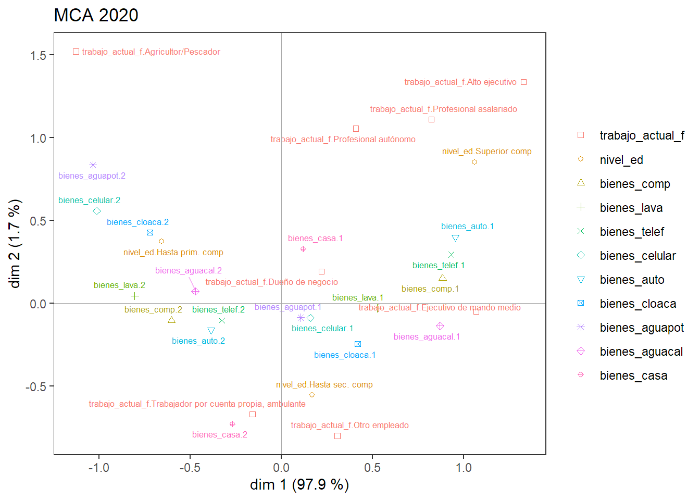
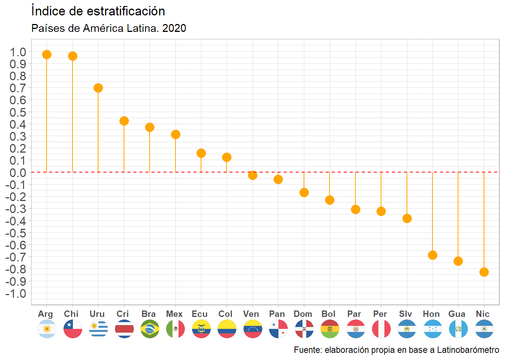
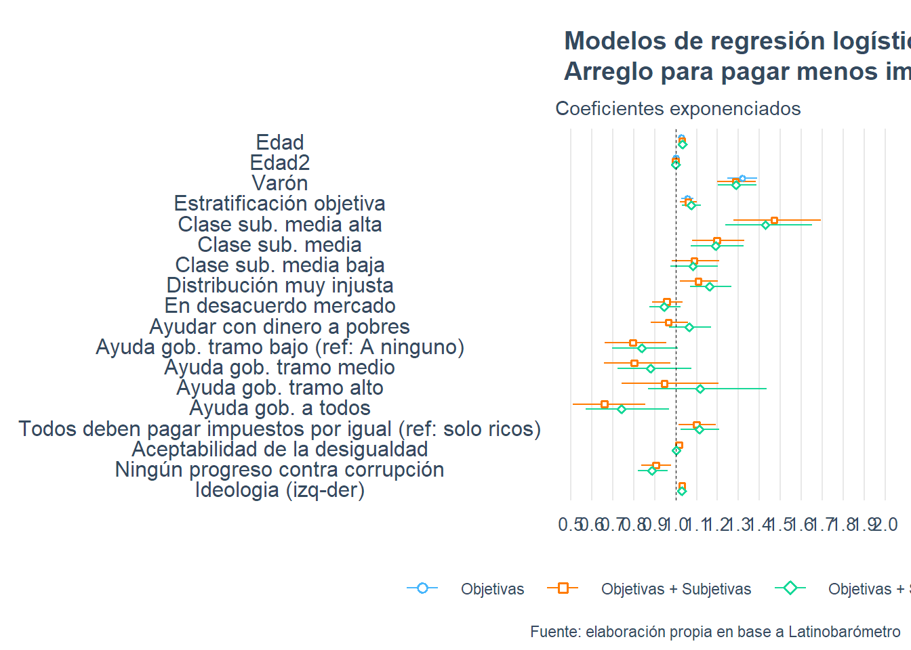
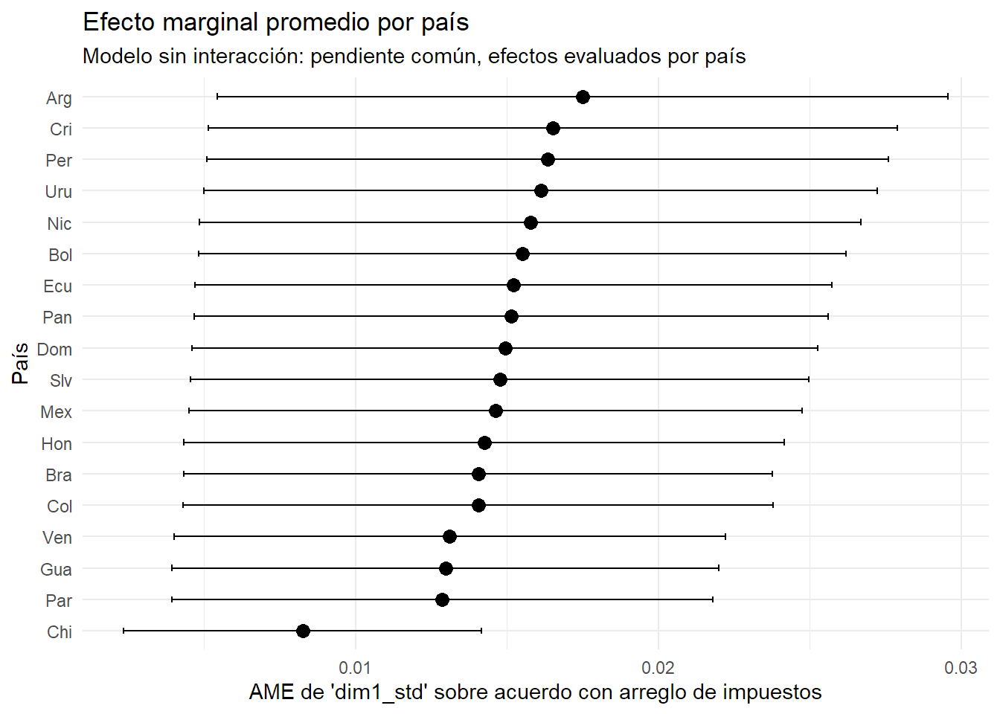
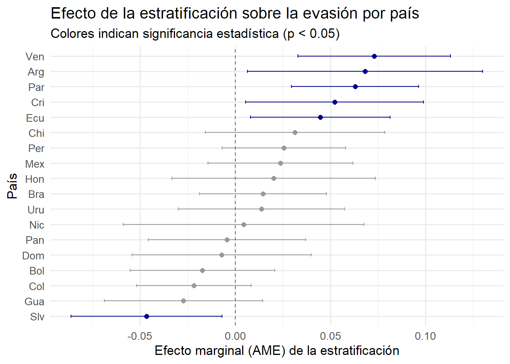

Code
rm(list = ls())
pacman::p_load(tidyverse, Hmisc, gtsummary, GDAtools, jtools, huxtable, survey, ggoxford, ggtext, lme4, performance, sjPlot, factoextra)
load("bases/latinobarometro_select.RData")
theme_set(theme_light())rm(list = ls())
pacman::p_load(tidyverse, Hmisc, gtsummary, GDAtools, jtools, huxtable, survey, ggoxford, ggtext, lme4, performance, sjPlot, factoextra)
load("bases/latinobarometro_select.RData")
theme_set(theme_light())latinobarometro <- latinobarometro %>%
mutate(arreglo_impuestos = ifelse(arreglo_impuestos == 2, 0, 1),
evasion_dic = ifelse(evasion == 1, 1, 0),
evasion_dic2 = ifelse(evasion == 1, 0, 1),
evasion_dic3 = ifelse(evasion >= 7, 1, 0),
argentina_lat = case_when(pais == 32 ~ "Argentina",
TRUE ~ "Resto América Latina"),
pro_mercado_dic = factor(case_when(pro_mercado_f == "Muy de acuerdo" ~ "De acuerdo",
pro_mercado_f == "De acuerdo" ~ "De acuerdo",
pro_mercado_f == "En desacuerdo" ~ "En desacuerdo",
pro_mercado_f == "Muy en desacuerdo" ~ "En desacuerdo",
TRUE ~ NA_character_))) %>%
filter(pais_f != "Esp")
#Banderas
latinobarometro <- latinobarometro %>%
mutate(iso3 = countrycode::countrycode(pais,
origin = "iso3n",
destination = "iso3c"))#2020
var_obj_2020 <- latinobarometro %>%
filter(anio == 2020) %>%
select(trabajo_actual_f, nivel_ed, bienes_comp, bienes_lava, bienes_telef, bienes_celular, bienes_auto, bienes_cloaca, bienes_aguapot,
bienes_aguacal, bienes_casa, wt)
mca2020 <- speMCA(var_obj_2020[,1:11], ncp = 2, row.w = var_obj_2020$wt)
mca2020 <- flip.mca(mca2020, dim = 1)
modif.rate(mca2020)$modif| mrate | cum.mrate |
|---|---|
| 97.9 | 97.9 |
| 1.75 | 99.7 |
| 0.34 | 100 |
| 0.00274 | 100 |
| 0.000808 | 100 |
| 0.000174 | 100 |
| 1.91e-05 | 100 |
tabcontrib(mca2020, dim = 1, best = T)| Variable | Category | Weight | Quality of representation | Contribution (left) | Contribution (right) | Total contribution | Cumulated contribution | Contribution of deviation | Proportion to variable |
|---|---|---|---|---|---|---|---|---|---|
| bienes_comp | 1 | 8.14e+03 | 0.529 | 10.12 | 17 | 17 | 17 | 100 | |
| 2 | 1.19e+04 | 0.526 | 6.89 | ||||||
| bienes_lava | 2 | 7.94e+03 | 0.418 | 8.14 | 13.49 | 30.49 | 13.49 | 100 | |
| 1 | 1.21e+04 | 0.419 | 5.35 | ||||||
| bienes_aguacal | 1 | 7.05e+03 | 0.406 | 8.48 | 13.06 | 43.55 | 13.06 | 100 | |
| 2 | 1.3e+04 | 0.401 | 4.58 | ||||||
| nivel_ed | Superior comp | 3.05e+03 | 0.2 | 5.45 | 10.54 | 54.1 | 10.13 | 92.17 | |
| Hasta prim. comp | 7.44e+03 | 0.252 | 5.1 | ||||||
| bienes_cloaca | 2 | 7.36e+03 | 0.297 | 6.06 | 9.59 | 63.68 | 9.59 | 100 | |
| 1 | 1.27e+04 | 0.295 | 3.53 | ||||||
| bienes_auto | 1 | 5.78e+03 | 0.366 | 8.38 | 8.38 | 72.07 | 8.38 | 71.31 | |
| bienes_telef | 1 | 5.22e+03 | 0.303 | 7.2 | 7.2 | 79.26 | 7.2 | 74.07 | |
| bienes_celular | 2 | 2.73e+03 | 0.16 | 4.44 | 4.44 | 83.7 | 4.44 | 86.32 |
ggcloud_variables(mca2020, vlab = T, shapes = T, shapesize = 1.5, force = 2,
textsize = 2.3, ) +
labs(title = "MCA 2020")
#Construcción de índice
estandarizar_ponderado <- function(x, w) {
media_ponderada <- sum(x * w) / sum(w)
var_ponderada <- sum(w * (x - media_ponderada)^2) / sum(w)
desv_ponderada <- sqrt(var_ponderada)
return((x - media_ponderada) / desv_ponderada)
}
coords_2020 <- data.frame(anio = 2020, dim1 = mca2020$ind$coord[,1])
# Filtrar y unir con coordenadas
latinobarometro2020 <- latinobarometro %>%
filter(anio == 2020) %>%
bind_cols(dim1 = coords_2020$dim1) %>%
mutate(dim1_std = estandarizar_ponderado(dim1, wt))
latinobarometro2020 %>%
group_by(iso3) %>%
summarise(
promedio = weighted.mean(dim1_std, wt = wt, na.rm = T)) %>%
ggplot(aes(x = fct_reorder(iso3, promedio, .desc = T), y = promedio)) +
geom_segment(aes(x=iso3, xend=iso3, y=0, yend=promedio), color="orange") +
geom_point( color="orange", size=4) +
geom_hline(yintercept = 0, linetype = "dashed", color = "red") +
geom_axis_flags(breaks = latinobarometro$iso3,
labels = latinobarometro$pais_f,
country_icons = latinobarometro$iso3,
width = 20,
lineheight = 2) +
labs(title = "Índice de estratificación",
subtitle = "Países de América Latina. 2020",
caption = "Fuente: elaboración propia en base a Latinobarómetro") +
theme(axis.title.x = element_blank(),
axis.title.y = element_blank(),
axis.text.y = element_text(size = 12)) +
scale_y_continuous(limits = c(-1, 1), breaks = seq(-1, 1, .1))
latinobarometro2020$just_dist_ingresos_dic <- relevel(latinobarometro2020$just_dist_ingresos_dic, ref = "Justa")
latinobarometro2020$clase_subjetiva4 <- relevel(latinobarometro2020$clase_subjetiva4, ref = "Baja")
latinobarometro2020$pro_mercado_dic <- relevel(latinobarometro2020$pro_mercado_dic, ref = "De acuerdo")
latinobarometro2020$pais_f <- relevel(latinobarometro2020$pais_f, ref = "Mex")
latinobarometro2020$sexo2 <- relevel(latinobarometro2020$sexo2, ref = "Mujer")
latinobarometro2020$ayuda_pobres_dinero_f <- relevel(latinobarometro2020$ayuda_pobres_dinero_f, ref = "No")
latinobarometro2020$ayuda_gobierno_tramo_f <- relevel(latinobarometro2020$ayuda_gobierno_tramo_f, ref = "A ninguno")
# latinobarometro2020$pago_impuestos_tramo_f <- relevel(latinobarometro2020$pago_impuestos_tramo_f, ref = "Ninguno")
# latinobarometro2020$corrupcion_f <- relevel(latinobarometro2020$corrupcion_f, ref = "Nada")
latinobarometro2020$arreglo_impuestos <- as.factor(latinobarometro2020$arreglo_impuestos)
latinobarometro2020$edad2 <- latinobarometro2020$edad^2
mod2_a <- glm(arreglo_impuestos ~ edad + edad2 + sexo2 + dim1_std,
data = latinobarometro2020, weights = wt, family = binomial(link = "logit"))
mod2_b <- glm(arreglo_impuestos ~ edad + edad2 + sexo2 + dim1_std + clase_subjetiva4 + just_dist_ingresos_dic + pro_mercado_dic + ayuda_pobres_dinero_f + ayuda_gobierno_tramo_f + pago_impuestos_dic + aceptabilidad_desigualdad + corrupcion_f + ideologia, data = latinobarometro2020, weights = wt, family = binomial(link = "logit"))
mod2_c <- glm(arreglo_impuestos ~ edad + edad2 + sexo2 + dim1_std + clase_subjetiva4 + just_dist_ingresos_dic + pro_mercado_dic + ayuda_pobres_dinero_f + ayuda_gobierno_tramo_f + pago_impuestos_dic + aceptabilidad_desigualdad + corrupcion_f + ideologia + pais_f, data = latinobarometro2020, weights = wt, family = binomial(link = "logit"), , na.action = na.exclude)
mod1 <- export_summs(mod2_a, mod2_b, mod2_c, model.names = c("Objetivas", "Objetivas + mediadoras", "Efecto fijo países"),
exp = T, stars = c(`***` = 0.01, `**` = 0.05, `*` = 0.1),
error_pos = "same",
coefs = c("Edad" = "edad",
"Edad2" = "edad2",
"Varón" = "sexo2Varón",
"Estratificación objetiva" = "dim1_std",
"Clase sub. media alta" = "clase_subjetiva4Media alta",
"Clase sub. media" = "clase_subjetiva4Media",
"Clase sub. media baja" = "clase_subjetiva4Media baja",
"Distribución muy injusta" = "just_dist_ingresos_dicMuy injusta",
"En desacuerdo mercado" = "pro_mercado_dicEn desacuerdo",
"Ayudar con dinero a pobres" = "ayuda_pobres_dinero_fSi",
"Ayuda gob. tramo bajo (ref: A ninguno)" = "ayuda_gobierno_tramo_fBajo",
"Ayuda gob. tramo medio" = "ayuda_gobierno_tramo_fMedio",
"Ayuda gob. tramo alto" = "ayuda_gobierno_tramo_fAlto",
"Ayuda gob. a todos" = "ayuda_gobierno_tramo_fA todos por igual",
"Todos deben pagar impuestos por igual (ref: solo ricos)" = "pago_impuestos_dicTodos pagan por igual",
"Aceptabilidad de la desigualdad" = "aceptabilidad_desigualdad",
"Ningún progreso contra corrupción" = "corrupcion_fNada",
"Ideologia (izq-der)" = "ideologia"))
mod1 %>%
set_caption("Modelos de regresión logística. Odds ratios. Evasión impositiva. 2020")| Objetivas | Objetivas + mediadoras | Efecto fijo países | |
|---|---|---|---|
| Edad | 1.03 *** (0.01) | 1.03 *** (0.01) | 1.03 *** (0.01) |
| Edad2 | 1.00 *** (0.00) | 1.00 *** (0.00) | 1.00 *** (0.00) |
| Varón | 1.32 *** (0.03) | 1.29 *** (0.04) | 1.29 *** (0.04) |
| Estratificación objetiva | 1.06 *** (0.02) | 1.06 ** (0.02) | 1.07 *** (0.03) |
| Clase sub. media alta | 1.47 *** (0.08) | 1.43 *** (0.09) | |
| Clase sub. media | 1.20 *** (0.06) | 1.19 *** (0.06) | |
| Clase sub. media baja | 1.09 (0.06) | 1.08 (0.06) | |
| Distribución muy injusta | 1.11 ** (0.05) | 1.16 *** (0.05) | |
| En desacuerdo mercado | 0.96 (0.05) | 0.95 (0.05) | |
| Ayudar con dinero a pobres | 0.97 (0.05) | 1.06 (0.06) | |
| Ayuda gob. tramo bajo (ref: A ninguno) | 0.80 ** (0.11) | 0.84 (0.11) | |
| Ayuda gob. tramo medio | 0.80 * (0.12) | 0.88 (0.12) | |
| Ayuda gob. tramo alto | 0.95 (0.14) | 1.12 (0.15) | |
| Ayuda gob. a todos | 0.66 *** (0.15) | 0.74 * (0.16) | |
| Todos deben pagar impuestos por igual (ref: solo ricos) | 1.10 ** (0.05) | 1.11 ** (0.05) | |
| Aceptabilidad de la desigualdad | 1.02 ** (0.01) | 1.00 (0.01) | |
| Ningún progreso contra corrupción | 0.91 ** (0.05) | 0.89 ** (0.05) | |
| Ideologia (izq-der) | 1.03 *** (0.01) | 1.03 *** (0.01) | |
| N | 19587 | 11165 | 11165 |
| AIC | 23519.90 | 13734.41 | 13569.97 |
| BIC | 23559.32 | 13873.50 | 13833.51 |
| Pseudo R2 | 0.01 | 0.02 | 0.04 |
| *** p < 0.01; ** p < 0.05; * p < 0.1. | |||
reg_coef <- plot_summs(mod2_a, mod2_b, mod2_c, ci_level = 0.91,
model.names = c("Objetivas", "Objetivas + Subjetivas", "Objetivas + Subjetivas + Países"),
point.size = 2,
line.size = c(0.5, 1),
exp = T,
coefs = c("Edad" = "edad",
"Edad2" = "edad2",
"Varón" = "sexo2Varón",
"Estratificación objetiva" = "dim1_std",
"Clase sub. media alta" = "clase_subjetiva4Media alta",
"Clase sub. media" = "clase_subjetiva4Media",
"Clase sub. media baja" = "clase_subjetiva4Media baja",
"Distribución muy injusta" = "just_dist_ingresos_dicMuy injusta",
"En desacuerdo mercado" = "pro_mercado_dicEn desacuerdo",
"Ayudar con dinero a pobres" = "ayuda_pobres_dinero_fSi",
"Ayuda gob. tramo bajo (ref: A ninguno)" = "ayuda_gobierno_tramo_fBajo",
"Ayuda gob. tramo medio" = "ayuda_gobierno_tramo_fMedio",
"Ayuda gob. tramo alto" = "ayuda_gobierno_tramo_fAlto",
"Ayuda gob. a todos" = "ayuda_gobierno_tramo_fA todos por igual",
"Todos deben pagar impuestos por igual (ref: solo ricos)" = "pago_impuestos_dicTodos pagan por igual",
"Aceptabilidad de la desigualdad" = "aceptabilidad_desigualdad",
"Ningún progreso contra corrupción" = "corrupcion_fNada",
"Ideologia (izq-der)" = "ideologia"))
reg_coef +
labs(title ="Modelos de regresión logística. \nArreglo para pagar menos impuestos. 2020",
subtitle ="Coeficientes exponenciados",
caption = "Fuente: elaboración propia en base a Latinobarómetro",
x = "Razones de momios") +
theme(axis.title.y = element_blank(),
axis.title.x = element_blank(),
axis.text.x = element_text(size = 10),
axis.text.y = element_text(size = 12),
legend.position= "bottom",
legend.title = element_blank()) +
scale_x_continuous(limits = c(0.5, 2), breaks = seq(0.5, 2, .1))
library(marginaleffects)
library(ggeffects)
ame_pais <- avg_slopes(mod2_c, variables = "dim1_std", by = "pais_f")
ggplot(ame_pais, aes(x = reorder(pais_f, estimate), y = estimate)) +
geom_point(size = 3) +
geom_errorbar(aes(ymin = conf.low, ymax = conf.high), width = 0.2) +
coord_flip() +
labs(
x = "País",
y = "AME de 'dim1_std' sobre acuerdo con arreglo de impuestos",
title = "Efecto marginal promedio por país",
subtitle = "Modelo sin interacción: pendiente común, efectos evaluados por país"
) +
theme_minimal()
mod2_interac <- glm(arreglo_impuestos ~ edad + edad2 + sexo2 + clase_subjetiva4 + just_dist_ingresos_dic + pro_mercado_dic + ayuda_pobres_dinero_f + ayuda_gobierno_tramo_f + pago_impuestos_dic + aceptabilidad_desigualdad + corrupcion_f + ideologia + pais_f * dim1_std, data = latinobarometro2020, weights = wt, family = binomial(link = "logit"), , na.action = na.exclude)
ame_pais <- avg_slopes(mod2_interac, variables = "dim1_std", by = "pais_f")
ame_pais$signif <- ame_pais$p.value < 0.05
ggplot(ame_pais, aes(x = reorder(pais_f, estimate), y = estimate, color = signif)) +
geom_point(size = 2) +
geom_errorbar(aes(ymin = conf.low, ymax = conf.high), width = 0.2) +
geom_hline(yintercept = 0, linetype = "dashed", color = "gray40") +
coord_flip() +
labs(
x = "País",
y = "Efecto marginal (AME) de la estratificación",
title = "Efecto de la estratificación sobre la evasión por país",
subtitle = "Colores indican significancia estadística (p < 0.05)"
) +
scale_color_manual(values = c("TRUE" = "darkblue", "FALSE" = "gray60")) +
theme_minimal(base_size = 13) +
theme(legend.position = "none")